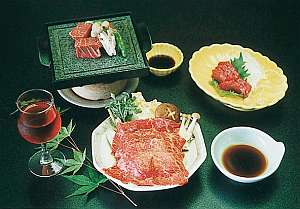
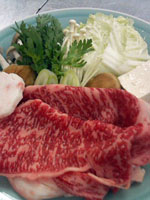
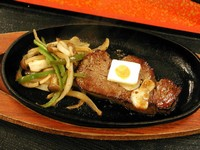
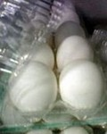
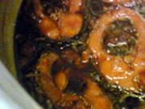
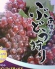
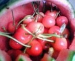
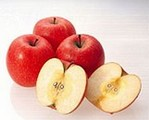
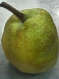
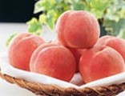

食べ物
牛肉料理
米沢牛はその味の良さで日本中にその名を知られています。すき焼き、しゃぶしゃぶ、ステーキのセットメニューはお客様にご好評を頂いております。

 
健康食
卵は温泉のお湯で４０分かけてゆっくり半熟に茹でられます。この温泉卵は小野川温泉の各旅館で召し上がれますし、お土産物の店でも売られています。この温泉卵は実においしく健康にもよいものです。
山形県はほとんど内陸の県です。そのため交通が発達していなかった時代には海水魚は貴重なものでした。その代わり、山形では淡水魚の料理が発達したのです。 二番目の写真は鯉の旨煮です。鯉は特に出産後の女性によいとされています。
そばも人気の高い食べ物です。そばは血液の循環を促し，血管を強くします。そばは熱いかけ汁をかけてたべたり、冷たく冷やしてそばつゆをつけて食べたりします。 卵、薬味、てんぷら、おろした山芋などが添えられます。
吾妻荘の料理長は料理のおいしさを追求するだけでなく、いつもお客様の健康を考えて料理を作っています。 私たちは健康に関心のあるお客様のためにワークショップを開き、自然食を紹介することもあります。


Fruits
山形県は「フルーツ王国」と呼ばれるほど果物の豊富な県で、各種果物が一年を通して出回っています。 山形で栽培されている主な果物には
さくらんぼ、りんご、桃、ぶどう，ラ・フランス（洋ナシの一種）などがあります。




